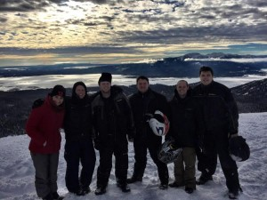

Why hire me as Junior Front-end Web Developer?
Relentlessly curious,
Analytical,
Proactive,
Dedicated,
and collaborative software developer
with over 15 years of professional experience in total.
Former career in the hospitality industry.
Here are some more characteristics:

- I work hard and have play hard mentality. Check reference
- Not afraid to fail and recognize my mistakes. I learn from them.
- I love learning.
- I do hate mediocrity. If I have the chance to improve, I ll take the initiative and just do it.
- Focusing is not an issue. Too bad a day has 24hours only.
- My experience from my former career taught me well when to lead and when to follow.
My Skills
 Strong HTML5 Knowledge
Strong HTML5 Knowledge
Strong CSS Knowledge
Beginner to Intermediate JavaScript
Experience working with JQuery
Ability to work in a Linux, Unix, or similar environment
With Linux
ES6+
Spread Operators, Default Params, Template Literals, Arrow functions etc.
Object Oriented Programming
Working with version control systems such as Git
Proficient in Merging and Rebasing with Git
Understanding of web applications and client/server systems and architectures
Understanding of HTTP, HTTPS and similar internet protocols
Previous experience with web application frameworks or languages such as Ruby on Rails.
With Ruby on Rails. Please check out my work
Previous experience with JavaScript frameworks such as Backbonejs, Emberjs, or Angularjs
Working experience with React.JS
CSS Frameworks such as Compass, Bootstrap, or Foundation
With Boorstrap.
Experience deploying and setting up working websites on the Internet
www.kostas-art.com / Bootstrap, HTML, CSS, JS/Jquery
www.nplaw.gr (under construction) / RoR, Bootstrap, HTML, CSS, JS/JQuery